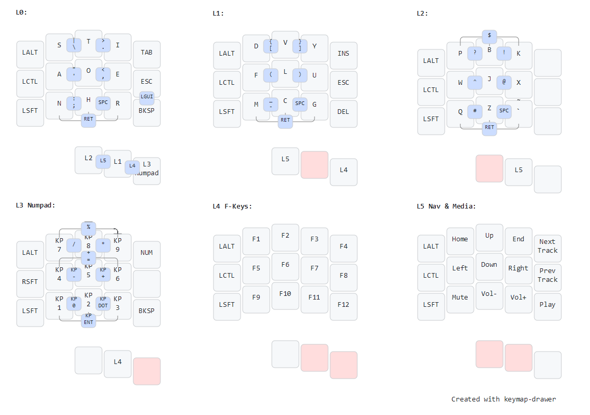

StiFluQz Keymap

StiFluQz, pronounced /ˈstIflukwIz/
(IPA),
is named for the main keys on the
alphabetic layers (sti, flu, qz).
If a cooler name arises, I may change it.
This is my personal left-handed keymap for half of a
Microdox keyboard
. I use it primarily with my OS layout set to QWERTY US English or
QWERTY US International.
My primary goal is to achieve left-handed typing so that the right
hand can remain occupied with a pointing device, especially a mouse pen.
It is annoying to set a mouse pen down and pick it up again. Specific
design goals, mostly related to ergonomics, include:
- Compactness
-
I want to reduce movement of my typing hand. 3x5+3 feels like the
largest layout that lets my wrist remain nearly still.
- Pinky stillness
-
Most of my repetitive-motion strain problems are
related to my pinkies. To eliminate horizontal travel, I have assigned
only one column to the pinky. I have found that holding modifiers does
not hurt as much as character typing; therefore only modifiers
are assigned to the pinky.
- Avoid vertical combos
-
I have learned from experience that vertical combos (ie. pressing
more than one key in the same column) is uncomfortable for me.
Therefore, I avoid it. The main exception to this rule is the pinky
column. I find it sufficiently comfortable to hold two or three keys
simultaneously with my pinky.
LCtrl+LAlt,
LShft+LCtrl, and LShft+LCtrl+LAlt are all
acceptable. The one challenge is LShft+LAlt; this does
require the use of an additional finger. Fortunately, this
combination is rare in my experience.
- Optimizing for letter frequency
-
This goal is not as rigorous for me
as for many designers, because although I primarily type English prose,
I do often type in various other human languages and programming
languages. Like many designers, I used
"ETAOIN SHRDLU"
as a starting point, but I raised the priority of some characters that
appear more often in the code I write, e.g.
x and
y.
- Combos over sequences
-
The majority of characters require at least two
fingers to type. Many require four. Including modifiers, some may
require five or more (e.g.
Ctrl+Alt+$).
Only one keycode is assigned to a one-shot: LGUI.
This modifier is common enough that I cannot leave it out, but not
so common that I need it to occupy a permanent place on the board.
- Consistency
-
The use of multiple layers and many combos raises the
cognitive load above using a larger, single-layer layout.
To avoid making it even more difficult, I make some keys consistent
across multiple or even all layers. The pinky modifiers
(
LAlt, LCtrl, LShft) are almost entirely consistent across
all layers. (The one exception is on the Numpad layer, where
LCtrl becomes RShft to facilitate text
selection when NumLock is on.)
As a lesser example, Spc and Ret are
consistent across the alphabetic layers.
Reasonable Questions
Even after taking the above into account, there are many reasonable
questions that keyboard aficionados might ask about StiFluQz.
- Why not an even smaller keyboard like ARTSEY?
-
I had considered ARTSEY and similar keymaps, but due to their
extreme compactness, they all require vertical combos. Moreover,
they tend to rely on autoshift and autocomplete, which does not
work well when I am typing something other than English prose.
- Why not ASETNIOP?
-
ASETNIOP shares some problems with ARTSEY, but more basically,
it requires two hands.
- Why the Microdox in particular?
-
I started planning by sketching what I thought would be ideal. I then
looked around the internet to see what others were working on in the
area of small ergonomic keyboards. I soon discovered
Ergogen, which I used to refine my
ideas further. Ergogen also led me to the
Absolem keyboard, which I
considered trying, but then I found the
Microdox
and decided that I liked its compactness. Not only is the Microdox
smaller than the Absolem, it also groups the thumb keys closer, which
makes it easier to press two at a time. This gives me two more layers.
- What about the other half of the Microdox?
-
For my purposes, I don't need the right half. However, as you can see
in my
keymap.c file, I programmed it to mirror the left half.
This means that with both halves, alternating typing is possible, like
with Taipo.
If I wanted to use the right side without mirroring, I would probably
turn it into a macropad. (For now, it remains unbuilt.)
On Github